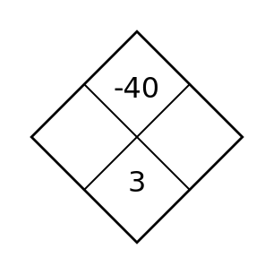
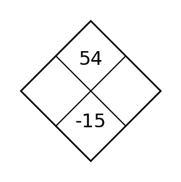
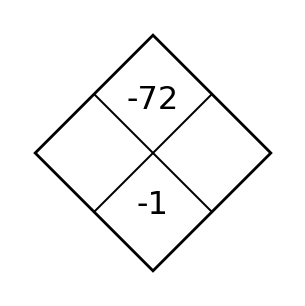

1 · Solve / Equation Fluency
Solve each equation.
- \(6x=42\)
- \(3x+5=26\)
Four short routines: solve · diamond · planned retrieval · planned retrieval
Solve each equation.
Find the two side integers. Their product goes on top and their sum goes on the bottom.

Point \(P\) is plotted on the graph. What is the y-coordinate of \(P\)?
Evaluate \(24\div 3+2(5-8)^2\). Show the order you used.
Four short routines: solve · diamond · planned retrieval · planned retrieval
Solve each equation.
Find the two side integers. Their product goes on top and their sum goes on the bottom.

Find the slope of the relationship in the table.
| x | −1 | 1 | 4 |
|---|---|---|---|
| y | 2 | 8 | 17 |
The rule is \(y=-2x+5\). Find the output when the input is \(-4\).
Four short routines: solve · diamond · planned retrieval · planned retrieval
Solve each equation.
Find the two side integers. Their product goes on top and their sum goes on the bottom.
The line is shown below. State the x-intercept and the y-intercept.
Evaluate \(2a^2-3b\) when \(a=-3\) and \(b=4\).
Four short routines: solve · diamond · planned retrieval · planned retrieval
Solve each equation.
Find the two side integers. Their product goes on top and their sum goes on the bottom.
A water tank contains 18 gallons at the start. Water is added at a constant rate. After 4 minutes, the tank contains 42 gallons. Find the rate of change and state what it means in this situation.
The rule is \(y=3x-5\). The output is \(16\). Find the input.
Four short routines: solve · diamond · planned retrieval · planned retrieval
Solve each equation.
Find the two side integers. Their product goes on top and their sum goes on the bottom.

Point \(P\) is shown on the coordinate plane. Write its ordered pair.
Find the slope of the line \(y=-\frac{3}{2}x+7\).